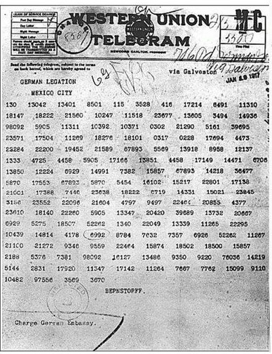
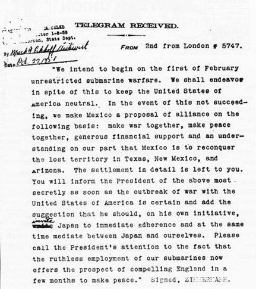

Sejarah Zimmerman Telegram
Zimmerman Telegram adalah komunikasi rahasia yang dikirim oleh Menteri Luar Negeri Jerman, Arthur Zimmerman, pada tahun 1917 kepada kedutaan besar Jerman di Meksiko.
Telegram ini mengusulkan aliansi antara Jerman dan Meksiko jika Amerika Serikat memutuskan untuk memasuki Perang Dunia I melawan Jerman. Pesan ini bocor, menyebabkan kemarahan publik dan berkontribusi pada keputusan Amerika untuk ikut serta dalam perang.
Ini adalah telegram Zimmerman yang masih ternkripsi.
Pada Zimmermann Telegram, Jerman menggunakan kode diplomatik, yang merupakan bentuk enkripsi sederhana yang mengandalkan substitusi kata atau frasa daripada sandi berbasis matematika yang lebih kompleks. Secara spesifik:
1. Kompilasi Kode Diplomat: Kode yang digunakan pada telegram ini adalah sistem codebook, di mana setiap kata atau frasa tertentu memiliki kode numerik yang sesuai. Misalnya, kata "Mexico" atau "attack" akan diganti dengan kode angka tertentu. Ini adalah metode enkripsi yang populer pada saat itu, meskipun tidak seaman metode enkripsi modern.
2. Pengiriman melalui Kabel: Telegram ini harus dikirim melalui jalur kabel telekomunikasi, yang membuatnya rentan disadap oleh pihak ketiga, dalam hal ini pihak Inggris yang memiliki akses ke jalur komunikasi transatlantik.
3. Dekripsi oleh Inggris: Kode diplomatik yang digunakan oleh Jerman dalam telegram ini berhasil dipecahkan oleh kriptografer Inggris, terutama oleh seorang kriptografer bernama Nigel de Grey dari tim Room 40, divisi intelijen angkatan laut Inggris. Inggris menggunakan informasi yang diperoleh dari sumber yang sebelumnya telah memecahkan kode Jerman untuk mendekripsi pesan tersebut.
Sumber utama yang membantu Inggris memecahkan kode Jerman dalam Zimmermann Telegram adalah buku kode Jerman yang sebelumnya telah diperoleh oleh intelijen Inggris. Inggris memiliki dua sumber utama untuk kode-kode Jerman:
1. Buku Kode Jerman 13040: Dikenal juga sebagai German Diplomatic Codebook 13040, ini adalah buku kode yang digunakan oleh Jerman untuk komunikasi diplomatik. Inggris berhasil mendapatkan buku ini pada tahun 1914 ketika pasukan Rusia menemukan salinan buku tersebut dari sebuah kapal Jerman yang terdampar di Laut Baltik. Buku ini kemudian diberikan kepada Inggris dan memungkinkan tim intelijen Inggris untuk mulai memecahkan kode-kode diplomatik Jerman.
2. Buku Kode Jerman 0075: Ini adalah buku kode tambahan yang diperoleh Inggris pada tahun 1915, yang memberikan lebih banyak informasi tentang sistem kode diplomatik Jerman. Buku ini melengkapi pemahaman Inggris tentang pesan diplomatik Jerman, termasuk telegram yang dikirimkan melalui saluran diplomatik seperti Zimmermann Telegram.
Tim pemecah kode Inggris di Room 40 menggunakan kedua buku ini untuk mengidentifikasi pola dan membongkar pesan-pesan rahasia Jerman. Dengan akses ke sistem kode Jerman, mereka mampu memecahkan Zimmermann Telegram, yang kemudian mengungkap rencana Jerman untuk mendorong Meksiko berperang melawan Amerika Serikat jika AS memasuki Perang Dunia I di pihak Sekutu.

Ini adalah Zimmerman Telegram yang sudah didekripsi
Zimmermann Telegram ini terkenal dalam sejarah kriptografi sebagai salah satu contoh pertama di mana codebook sederhana digunakan, tetapi dengan risiko rentan disadap dan dipecahkan, terutama ketika kekuatan pemecah kode lawan cukup kuat.